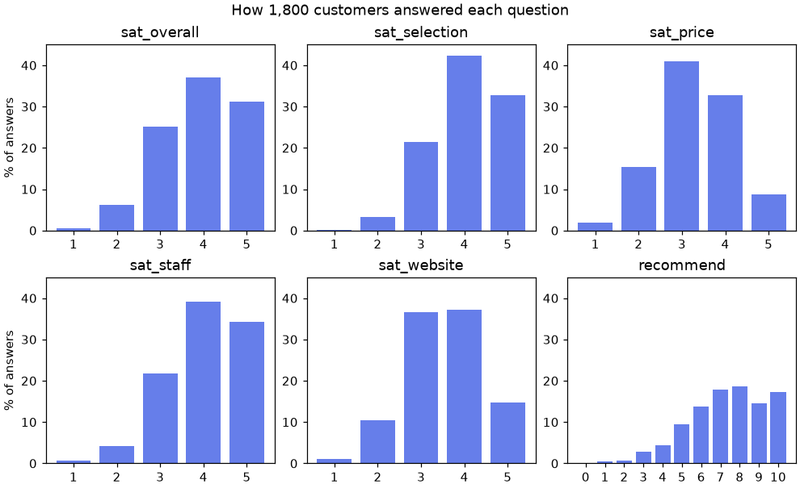
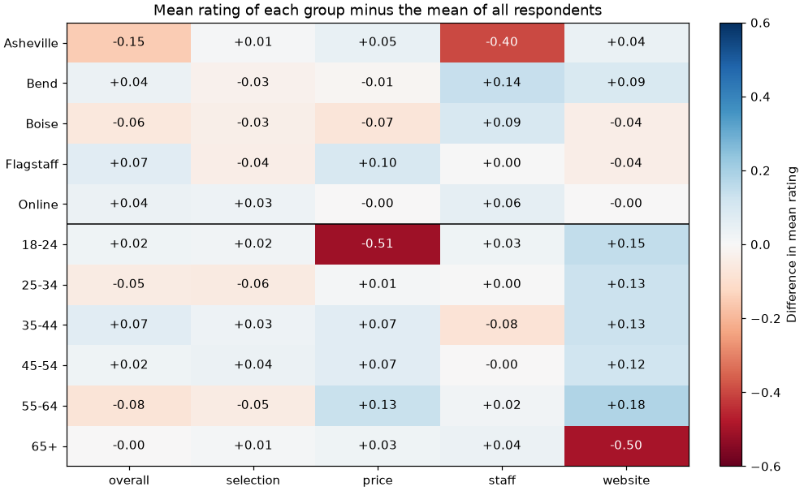
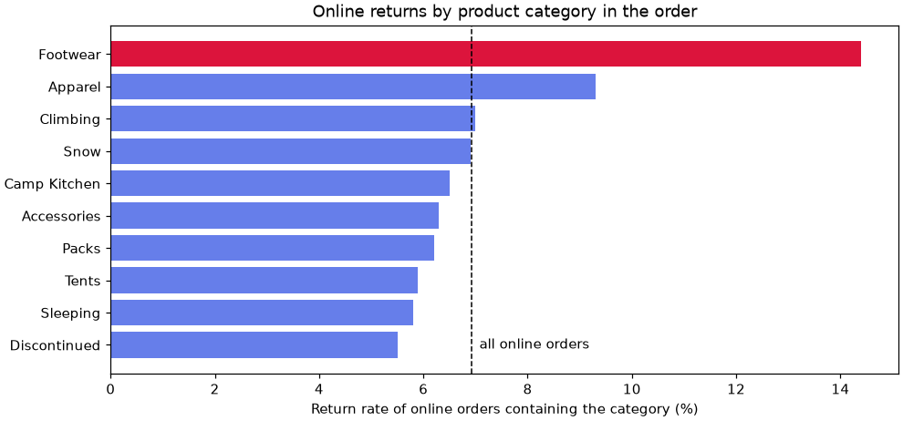

🔍 Lesson 4.7: An EDA Workflow
Bring pandas, Matplotlib and statistics together into one repeatable routine for the moment someone hands you a file you have never seen and asks, "What does this tell us?"
🎯 Learning Objectives
By the end of this lesson, you will be able to:
- Follow a seven-step exploratory data analysis (EDA) routine on an unfamiliar dataset, starting from written questions
- Establish what one row means, which columns are keys, and which values are missing and why
- Summarize single variables, pairs of variables and segments with the right table, chart or test for each
- Tell a finding from a lead: correct for scanning many comparisons and check an obvious competing explanation
- Write up findings, caveats and next questions so that someone else can act on them
In This Lesson
🧭 Why a Routine?
Over the last three modules you collected a full toolkit: loading and cleaning, grouping and merging, charts, summaries, correlation, tests. Each lesson handed you the right tool for its topic. Real work does not. Someone sends a file and a vague question, and you have to decide what to do first, what to do next, and when to stop.
Exploratory data analysis (EDA) is the work of getting to know a dataset before you rely on it: what it contains, what is wrong with it, and what it suggests. Without a routine, EDA turns into making charts until something looks interesting, which is slow and, as Lesson 4.5 showed, a reliable way to fool yourself.
💡 Mental Model: The Detective at the Scene
A good detective does not walk in and arrest the first person who looks nervous. They ask what they are trying to find out, secure the scene, note what is there and what is missing, examine each piece of evidence, look for connections, and write a report that separates what is established from what is suspected. They follow the same order every time, because the routine is what stops them from overlooking the obvious. EDA is the same job with DataFrames.
| Step | The question you are answering | Main tools |
|---|---|---|
| 1. Questions | Who wants to know what, and what would they do with the answer? | A text cell |
| 2. Structure | What is one row? Which columns identify it? What types are the columns? | shape, dtypes, nunique, is_unique (Module 2) |
| 3. Quality | What is missing, impossible, duplicated or unrepresentative? | isna, duplicated, ranges, merge with validate (Lessons 2.3, 2.5) |
| 4. One variable | What does each column look like by itself? | Counts, medians, histograms and bar charts (Lessons 4.1, 4.2, Module 3) |
| 5. Two variables | Which columns move together? | Correlation, grouped summaries (Lessons 2.4, 4.4) |
| 6. Segments | Is the story the same for every group? | groupby, pivot tables, tests with a correction (Lessons 2.6, 4.5) |
| 7. Findings | What did we learn, how sure are we, and what next? | Plain sentences |
You will walk through all seven steps on Pinecrest's customer survey, then run the routine yourself in the project on a different question. There is very little new syntax in this lesson. What is new is the order, and the judgment about what each result means.
❓ Step 1: Questions First
Before opening the file, write down what you are trying to learn. Questions decide which columns matter, which comparisons are planned and which are fishing, and when you are done. They come from the person who asked, so find out who that is and what decision is waiting on the answer.
The scenario: Pinecrest surveyed customers in the autumn of 2025. The head of customer experience has budget for one or two improvement projects next year and wants to know where to spend it.
📝 Questions for the Survey, Written Before Loading It
- Which parts of the experience (selection, price, staff, website) do customers rate lowest?
- Which of those parts is most closely tied to overall satisfaction and to recommending Pinecrest?
- Is any store or age group noticeably less satisfied than the rest, and with what?
- Who answered? Can these responses speak for Pinecrest's customers in general?
Four questions is plenty. Questions 1 to 3 map onto steps 4, 5 and 6 of the routine, and question 4 belongs to step 3. That is no accident: the routine is built so that ordinary questions have a place to be answered.
✅ Your Questions Are Allowed to Be Imperfect
You will not know the best questions before you have seen the data, and nobody does. Write the best ones you can, then revise them openly when the data teach you something. A changed question that you recorded is good practice. A question invented afterward to fit a pretty chart is not.
🧱 Step 2: Structure
Now load the file and establish the basics. The most important fact about any table is its grain: what one row represents. Every count and every average you compute later depends on it.
import numpy as np
import pandas as pd
import matplotlib.pyplot as plt
from scipy import stats
pd.set_option("display.width", 150)
pd.set_option("display.max_columns", 20)
survey = pd.read_csv("data/survey.csv", parse_dates=["survey_date"])
print(survey.shape)
print(survey.drop(columns="comment").head(3).T)Output
(1800, 12)
0 1 2
response_id 1 2 3
customer_id 13742 12267 10108
survey_date 2025-10-01 00:00:00 2025-10-01 00:00:00 2025-10-01 00:00:00
age_group 65+ 18-24 25-34
store Asheville Boise Online
sat_overall 5.0 3.0 4.0
sat_selection 5.0 3.0 5.0
sat_price 5.0 3.0 4.0
sat_staff 5.0 3.0 3.0
sat_website 3.0 NaN 4.0
recommend NaN 6.0 7.01,800 rows and 12 columns. Printing the first rows transposed (.T) turns a wide table into a readable list, one column per line (the long free-text comment column is left out here to keep it narrow). You can already see ratings stored as decimals and at least one missing value.
You will want the same summary of every column for every new table, so write it once as a function and keep it.
def overview(df):
"""One row per column: type, missing values, distinct values and an example."""
return pd.DataFrame({
"dtype": df.dtypes.astype(str),
"missing": df.isna().sum(),
"missing_pct": (df.isna().mean() * 100).round(1),
"unique": df.nunique(),
"example": df.apply(lambda col: str(col.dropna().iloc[0])[:22]),
})
print(overview(survey))Output
dtype missing missing_pct unique example
response_id int64 0 0.0 1800 1
customer_id int64 0 0.0 1800 13742
survey_date datetime64[us] 0 0.0 46 2025-10-01 00:00:00
age_group str 0 0.0 6 65+
store str 0 0.0 5 Asheville
sat_overall float64 53 2.9 5 5.0
sat_selection float64 53 2.9 5 5.0
sat_price float64 47 2.6 5 5.0
sat_staff float64 605 33.6 5 5.0
sat_website float64 472 26.2 5 3.0
recommend float64 54 3.0 11 6.0
comment str 977 54.3 26 Love this store. WillOne table, and a lot to read from it:
response_idandcustomer_ideach have 1,800 distinct values in 1,800 rows, so each identifies a row. The grain is one response per customer.- The five
sat_columns have 5 distinct values: ratings from 1 to 5.recommendhas 11: a 0-to-10 scale. They arefloat64only because they contain missing values. age_group(6 values) andstore(5 values) are the segment variables.sat_staffandsat_websiteare missing for a third and a quarter of respondents. That is too many to be carelessness, so it goes on the list for step 3.commentis free text, present for under half.
print("Survey dates:", survey["survey_date"].min().date(), "to", survey["survey_date"].max().date())
print(survey["store"].value_counts().to_string())
print()
print(survey["age_group"].value_counts().sort_index().to_string())Output
Survey dates: 2025-10-01 to 2025-11-15
store
Online 824
Boise 329
Bend 232
Flagstaff 213
Asheville 202
age_group
18-24 192
25-34 280
35-44 318
45-54 339
55-64 279
65+ 392Six weeks of responses. Almost half of the respondents shop mostly online, and the store groups hold about 200 to 330 people each. Keep those sizes in mind: a group of 200 gives a much rougher estimate than a group of 800.
🩺 Step 3: Quality
Before trusting any number, look for what is impossible, duplicated, missing or unrepresentative. Start with the quick checks.
items = ["sat_overall", "sat_selection", "sat_price", "sat_staff", "sat_website"]
print(survey[items + ["recommend"]].agg(["min", "max"]))
print("Fully duplicated rows:", survey.duplicated().sum())Output
sat_overall sat_selection sat_price sat_staff sat_website recommend
min 1.0 1.0 1.0 1.0 1.0 0.0
max 5.0 5.0 5.0 5.0 5.0 10.0
Fully duplicated rows: 0Every rating is inside its scale and no row is repeated. Now the missing values. The useful question is never only "how many?" but "missing for whom?"
survey["shops"] = np.where(survey["store"] == "Online", "online", "in store")
missing_share = survey.groupby("shops")[items].agg(lambda col: col.isna().mean())
print(missing_share.round(2))Output
sat_overall sat_selection sat_price sat_staff sat_website
shops
in store 0.03 0.03 0.02 0.03 0.46
online 0.03 0.03 0.03 0.70 0.03There is the explanation. 70% of online shoppers skipped the staff question, and 46% of store shoppers skipped the website question, while the other items are missing for about 3% of everyone. People left out the questions about the part of Pinecrest they do not use. The values are not missing at random, and that changes how the columns must be read: sat_staff is, in practice, "what store shoppers think of the staff".
⚠️ Missing Values Carry Information
If you fill these gaps with the column average, or drop every row that has one, you quietly change who the analysis is about. Decide per question. For staff satisfaction, analyze store shoppers. For website satisfaction, remember that the answers come mostly from online shoppers. Write the decision down: it becomes a caveat.
The last quality check is the one most often skipped: who is in this data, compared with who you want to talk about? The customer table can tell you. Each survey row should match exactly one customer, and validate="one_to_one" makes pandas raise an error if that is not true.
customers = pd.read_csv("data/customers.csv")
orders = pd.read_csv("data/orders.csv", parse_dates=["order_date"])
joined = survey.merge(customers[["customer_id", "loyalty_tier"]], on="customer_id",
how="left", validate="one_to_one")
who = pd.DataFrame({
"survey": joined["loyalty_tier"].value_counts(normalize=True),
"all_customers": customers["loyalty_tier"].value_counts(normalize=True),
}).round(3)
print(who)
has_ordered = customers["customer_id"].isin(orders["customer_id"])
print(f"\nCustomers with at least one order: {has_ordered.mean():.0%}")
print(f"Survey respondents with at least one order: "
f"{survey['customer_id'].isin(orders['customer_id']).mean():.0%}")Output
survey all_customers
loyalty_tier
Basic 0.456 0.582
Silver 0.349 0.267
Gold 0.195 0.151
Customers with at least one order: 78%
Survey respondents with at least one order: 100%The respondents are not a cross-section of Pinecrest's customers. Every one of them has placed an order (against 78% of all accounts), and Silver and Gold members are over-represented: 54% of respondents against 42% of customers. That makes sense, since engaged customers answer surveys, and it means the survey describes active, fairly loyal customers. It cannot tell you why the 22% who never ordered stayed away. Question 4 is answered, and the answer is a caveat for everything that follows.
📊 Step 4: One Variable at a Time
Look at every column of interest by itself before comparing anything. These are ordinal ratings, so, as in Lesson 4.2, the informative summaries are the median and the share of answers at each end, with the mean as a convenient extra for comparing items.
summary = pd.DataFrame({
"answers": survey[items].count(),
"median": survey[items].median(),
"mean": survey[items].mean().round(2),
"pct_4_or_5": (survey[items].ge(4).sum() / survey[items].count() * 100).round(1),
"pct_1_or_2": (survey[items].le(2).sum() / survey[items].count() * 100).round(1),
})
print(summary.sort_values("mean"))Output
answers median mean pct_4_or_5 pct_1_or_2
sat_price 1753 3.0 3.31 41.5 17.5
sat_website 1328 4.0 3.54 51.9 11.4
sat_overall 1747 4.0 3.92 68.3 6.6
sat_staff 1195 4.0 4.02 73.3 5.0
sat_selection 1747 4.0 4.04 75.1 3.5Question 1 has its answer. Price is rated lowest: a median of 3, only 42% satisfied (a 4 or 5), and about one in six dissatisfied. Website comes next. Selection and staff are strong, with at most one answer in twenty at the bottom of the scale. (Dividing by .count(), the number who answered, keeps the missing values from being counted as "not satisfied".)
A table of summaries can hide the shape, so draw every distribution. Six small panels on one figure, the layout from Lesson 3.2, make them easy to compare.
fig, axes = plt.subplots(2, 3, figsize=(9, 5.5), layout="constrained")
for ax, col in zip(axes.flat, items + ["recommend"]):
counts = survey[col].value_counts().sort_index()
ax.bar(counts.index, counts.to_numpy() / counts.sum() * 100, color="#667eea")
ax.set_title(col)
ax.set_xticks(counts.index)
ax.set_ylim(0, 45)
for ax in axes[:, 0]:
ax.set_ylabel("% of answers")
fig.suptitle("How 1,800 customers answered each question")
plt.show()
The pictures confirm the table and add detail. Price peaks at 3 where the others peak at 4. The recommend score has a bump at 10, a common pattern on such scales: some people give the top mark out of habit. Nothing looks broken: no spike at an impossible value, no suspicious gap.
🔗 Step 5: Two Variables Together
Question 2 asks which part of the experience is most closely tied to overall satisfaction and to recommending. That is a question about pairs of columns. For ordinal ratings, Lesson 4.4 gave you the tool: Spearman's rank correlation.
corr = survey[items + ["recommend"]].corr(method="spearman")
print(corr.round(2))Output
sat_overall sat_selection sat_price sat_staff sat_website recommend
sat_overall 1.00 0.49 0.45 0.49 0.43 0.63
sat_selection 0.49 1.00 0.40 0.43 0.43 0.55
sat_price 0.45 0.40 1.00 0.41 0.37 0.53
sat_staff 0.49 0.43 0.41 1.00 0.38 0.58
sat_website 0.43 0.43 0.37 0.38 1.00 0.48
recommend 0.63 0.55 0.53 0.58 0.48 1.00Read the sat_overall and recommend columns. Overall satisfaction and willingness to recommend are strongly related (0.63), as you would hope. Each specific item correlates moderately with both, between 0.43 and 0.58, with staff and selection slightly ahead and website last. The honest reading is that no single item dominates: the differences between 0.43 and 0.49 are small, and each correlation is computed only on the people who answered both questions, which for staff means mostly store shoppers.
A correlation coefficient compresses a relationship into one number. Look at the relationship itself at least once.
print(survey.groupby("sat_overall")["recommend"].agg(["count", "median", "mean"]).round(2))Output
count median mean
sat_overall
1.0 8 3.5 3.12
2.0 105 5.0 4.73
3.0 421 6.0 6.12
4.0 634 8.0 7.44
5.0 531 9.0 8.86The median recommend score climbs steadily with each step of overall satisfaction, from 5 among people who answered 2 to 9 among people who answered 5. (Only eight people gave a 1, so that row means little.) The relationship is steady and monotonic, which is what Spearman's coefficient assumes.
💡 Correlation Still Is Not Causation
It is tempting to say "staff satisfaction drives recommendations, so invest in staff". The survey cannot show that. A customer in a good mood rates everything higher, which alone would make every pair of items correlate. What step 5 can do is tell you where to look. Step 6 looks.
🧩 Step 6: Segments
Averages over everyone can hide a group with a very different experience. Question 3 asks whether any store or age group stands out. Build one table of means for both ways of slicing the respondents.
by_store = survey.groupby("store")[items].mean()
by_age = survey.groupby("age_group")[items].mean()
everyone = survey[items].mean().to_frame("ALL").T
segment_means = pd.concat([everyone, by_store, by_age])
print(segment_means.round(2))Output
sat_overall sat_selection sat_price sat_staff sat_website
ALL 3.92 4.04 3.31 4.02 3.54
Asheville 3.77 4.05 3.35 3.62 3.58
Bend 3.96 4.01 3.30 4.16 3.63
Boise 3.86 4.01 3.24 4.11 3.50
Flagstaff 3.99 4.00 3.40 4.02 3.50
Online 3.96 4.07 3.30 4.07 3.54
18-24 3.95 4.06 2.80 4.05 3.69
25-34 3.88 3.99 3.32 4.02 3.67
35-44 3.99 4.07 3.38 3.94 3.67
45-54 3.95 4.08 3.38 4.01 3.66
55-64 3.85 3.99 3.44 4.04 3.72
65+ 3.92 4.05 3.33 4.05 3.04Eleven groups by five items is 55 numbers, and three of them are hard to find by eye. Subtract the overall mean from each row and color the result, and they jump out.
gaps = segment_means.drop(index="ALL") - segment_means.loc["ALL"]
fig, ax = plt.subplots(figsize=(9, 5.5), layout="constrained")
image = ax.imshow(gaps, cmap="RdBu", vmin=-0.6, vmax=0.6, aspect="auto")
ax.set_xticks(range(len(items)), labels=[c.replace("sat_", "") for c in items])
ax.set_yticks(range(len(gaps)), labels=gaps.index)
for i in range(gaps.shape[0]):
for j in range(gaps.shape[1]):
value = gaps.iloc[i, j]
ax.text(j, i, f"{value:+.2f}", ha="center", va="center",
color="white" if abs(value) > 0.35 else "black")
ax.axhline(4.5, color="black", linewidth=1)
ax.set_title("Mean rating of each group minus the mean of all respondents")
fig.colorbar(image, ax=ax, label="Difference in mean rating")
plt.show()
Every other group is within 0.2 of the overall mean on every item. Three cells are not. Before these become findings, apply the two disciplines from Lesson 4.5.
Discipline 1: You Just Ran 55 Comparisons
Scanning a grid for the darkest cells is multiple testing, whether or not you call it that. Test each group against everyone else on each item, with the Mann-Whitney test for ratings, and correct with Holm's method.
from statsmodels.stats.multitest import multipletests
rows = []
for seg in ["store", "age_group"]:
for level in sorted(survey[seg].unique()):
inside = survey[seg] == level
for item in items:
x = survey.loc[inside, item].dropna()
y = survey.loc[~inside, item].dropna()
rows.append({"group": level, "item": item, "n": len(x),
"gap": x.mean() - y.mean(),
"p": stats.mannwhitneyu(x, y).pvalue})
scan = pd.DataFrame(rows)
scan["p_holm"] = multipletests(scan["p"], method="holm")[1]
print(f"{len(scan)} tests, {(scan['p'] < 0.05).sum()} below 0.05 before correction, "
f"{(scan['p_holm'] < 0.05).sum()} after")
top = scan.sort_values("p").head(6).copy()
top["gap"] = top["gap"].round(2)
top["p"] = top["p"].map("{:.1e}".format)
top["p_holm"] = top["p_holm"].map("{:.1e}".format)
print(top.to_string(index=False))Output
55 tests, 9 below 0.05 before correction, 4 after
group item n gap p p_holm
65+ sat_website 291 -0.64 7.3e-25 4.0e-23
18-24 sat_price 186 -0.57 7.0e-16 3.8e-14
Asheville sat_staff 193 -0.47 2.0e-09 1.1e-07
55-64 sat_website 210 0.21 9.2e-04 4.8e-02
55-64 sat_price 273 0.16 2.6e-03 1.3e-01
Bend sat_staff 228 0.17 6.9e-03 3.5e-01The three dark cells survive the correction with room to spare: their adjusted p-values are far below 0.05, and their gaps, around half a rating point, are large for a five-point scale. One more result survives: 55 to 64 year olds rate the website slightly higher than everyone else. Look at its size, +0.21, and at its cause: "everyone else" includes the unhappy 65+ group, which pulls the comparison group down. It is a side effect of the scan design, and it does not belong in the findings.
Discipline 2: Could Something Else Explain It?
Asheville's staff rating is the result most likely to lead to action, so challenge it. Maybe Asheville simply has a different mix of customers. If the gap came from its age mix, it would shrink or vanish inside each age group.
in_store = survey[survey["store"] != "Online"]
staff_table = in_store.pivot_table(index="store", columns="age_group", values="sat_staff", aggfunc="mean")
print(staff_table.round(2))
print("\nAsheville responses per age group:",
in_store[in_store["store"] == "Asheville"].groupby("age_group")["sat_staff"].count().to_list())Output
age_group 18-24 25-34 35-44 45-54 55-64 65+
store
Asheville 3.67 3.71 3.17 3.57 3.79 3.82
Bend 4.22 4.08 4.07 4.27 4.15 4.17
Boise 4.18 4.13 4.10 4.15 4.02 4.11
Flagstaff 3.85 4.11 4.05 4.05 3.94 4.09
Asheville responses per age group: [18, 31, 30, 46, 24, 44]Asheville is the lowest store in every age group. The cells are small (18 to 46 Asheville responses each), so individual numbers bounce around, but the direction never changes. Age mix does not explain the gap. That does not prove the staff are the cause: it removes one competing explanation and leaves the finding standing.
📝 Step 7: Findings and Caveats
Exploration that stays in a notebook helps nobody. The last step is to write down, in plain sentences, what you found, how sure you are, and what you would do next. Often a finding points at another dataset, and following the lead for five minutes is worth it. Asheville has the least satisfied store shoppers. How is Asheville doing commercially?
daily = pd.read_csv("data/daily_sales.csv", parse_dates=["date"])
yearly = daily.pivot_table(index="store", columns=daily["date"].dt.year, values="revenue", aggfunc="sum")
yearly["change"] = (yearly[2025] / yearly[2024] - 1).map("{:+.1%}".format)
print(yearly.round(0))Output
date 2024 2025 change
store
Asheville 2123278.0 2017699.0 -5.0%
Bend 2476118.0 2569350.0 +3.8%
Boise 3518292.0 3846406.0 +9.3%
Flagstaff 2270180.0 2717997.0 +19.7%Asheville is the only store whose revenue fell from 2024 to 2025, while the other three grew. Two independent datasets now point at the same store. That is still not proof that service problems caused the decline (a new competitor or roadworks could produce both), and it turns "a low survey number" into "a store someone should visit".
📄 Customer survey, autumn 2025: what the data say
Findings
- Price is the weakest part of the experience. Only 42% of customers are satisfied with prices (median 3 of 5), against 75% for selection. Website satisfaction is second lowest (52%).
- No single item dominates overall satisfaction. Every item correlates moderately with overall satisfaction and with recommending (Spearman 0.43 to 0.58).
- Three groups stand out, each by about half a rating point, each surviving a correction for 55 comparisons: staff satisfaction in Asheville (3.62 against about 4.1 at other stores, and lower in every age group), price satisfaction among 18 to 24 year olds (2.80), and website satisfaction among customers of 65 and over (3.04).
- Asheville is also the only store with falling revenue (2025 against 2024).
Caveats
- Respondents are active, loyal customers: all have ordered, and Silver and Gold members are over-represented. Lapsed and never-ordered customers are not heard.
- Staff ratings come almost entirely from store shoppers and website ratings mostly from online shoppers.
- The segment results came from scanning, so they are exploratory. The survey shows association, not cause.
- Free-text comments were not analyzed.
Next questions
- What changed in Asheville: staffing levels, turnover, local competition?
- Which website tasks trouble older customers? The comments and the web session data may say.
- Is the price gap among younger customers about list prices or about not knowing of promotions?
Notice the shape of that note. Each finding is one sentence with a number. The caveats say who and what the data cannot speak for. The next questions feed step 1 of the next round, which is why the diagram at the top is a loop.
⚠️ Common Mistakes
Exploration goes wrong quietly. Most of these produce a perfectly tidy number, which is what makes them dangerous. Each has caught experienced analysts, so treat a slip as a sign that you are doing real work.
1. Dropping Every Row with a Missing Value
print(len(survey), "responses before,", len(survey.dropna()), "after dropna()")Output
1800 responses before, 295 after dropna()What happened: dropna() with no arguments keeps only rows that are complete in every column, including the optional comment. Five responses in six are gone, and the survivors are an odd group: people who use both the stores and the website and also like to write. Fix: drop per question, with dropna(subset=[...]) naming only the columns that analysis needs. Most pandas summaries already skip missing values for you.
2. Filling Missing Ratings with Zero
print(f"Mean staff rating, honest: {survey['sat_staff'].mean():.2f}")
print(f"After fillna(0): {survey['sat_staff'].fillna(0).mean():.2f}")Output
Mean staff rating, honest: 4.02
After fillna(0): 2.67What happened: 605 people who did not answer were recorded as giving a rating below the bottom of the scale. Fix: leave missing values missing unless you have a reason, grounded in how the data were collected, to believe a specific value.
3. A Merge That Silently Multiplies Rows
with_orders = survey.merge(orders, on="customer_id")
print(len(survey), "survey rows became", len(with_orders))
print(f"Mean recommend score: {survey['recommend'].mean():.3f} before, {with_orders['recommend'].mean():.3f} after")Output
1800 survey rows became 9230
Mean recommend score: 7.359 before, 7.326 afterWhat happened: a customer with nine orders now appears nine times, so frequent buyers count many times over in every average. The grain changed from "one response" to "one order of a respondent" without any message. Fix: state the relationship you expect, and let pandas check it.
survey.merge(orders, on="customer_id", validate="one_to_one")Error
MergeError: Merge keys are not unique in right dataset; not a one-to-one merge
...That error is the helpful outcome. To bring order information into a survey analysis, first summarize orders to one row per customer (groupby("customer_id")), then merge.
4. Reporting a Column Average Without Asking Who Answered
"Customers rate our staff 4.02" sounds like a statement about all customers. Step 3 showed that 70% of online shoppers skipped the question. Fix: whenever a column has many missing values, find out whom they belong to before you describe the column.
5. Presenting the Best of Many Comparisons as a Planned Result
The segment scan ran 55 tests. Showing only the three winners, with their uncorrected p-values, would overstate the evidence. Fix: report how many comparisons you made, correct for them, look at the size of each gap, and call scanned results exploratory.
6. Starting with Charts Instead of Questions
There is no error message for an afternoon of plotting everything against everything. Fix: step 1. When you catch yourself making a chart, ask which written question it answers. If the answer is "none", either add the question on purpose or skip the chart.
🛠️ Project: Why Do Orders Come Back?
In Lesson 4.5 you found that online orders are returned twice as often as store orders. The operations manager wants to know why, and what could be done about it. This time the data are spread over three tables, and nobody has told you where to look. Run the full routine in a new notebook called lesson_4_7_project. Allow about 45 minutes.
🛠️ Step 1: Questions (5 min)
Write your questions in a Markdown cell before loading anything. A reasonable set:
- How common are returns, and has the rate changed over time?
- Which kinds of orders are returned more: by channel, payment method, order size?
- Do certain product categories account for the difference between online and store?
- What do the data not tell us about returns?
🛠️ Step 2: Structure (5 min)
Load the three tables and establish the grain and the key of each. Paste in overview from the lesson.
import numpy as np
import pandas as pd
import matplotlib.pyplot as plt
from scipy import stats
from statsmodels.stats.multitest import multipletests
def overview(df):
"""One row per column: type, missing values, distinct values and an example."""
return pd.DataFrame({
"dtype": df.dtypes.astype(str),
"missing": df.isna().sum(),
"missing_pct": (df.isna().mean() * 100).round(1),
"unique": df.nunique(),
"example": df.apply(lambda col: str(col.dropna().iloc[0])[:22]),
})
orders = pd.read_csv("data/orders.csv", parse_dates=["order_date"])
order_items = pd.read_csv("data/order_items.csv")
products = pd.read_csv("data/products.csv")
print(overview(orders))
print()
print("orders:", orders.shape, " key order_id unique:", orders["order_id"].is_unique)
print("order_items:", order_items.shape, " key order_item_id unique:", order_items["order_item_id"].is_unique)
print("products:", products.shape, " key sku unique:", products["sku"].is_unique)
print("lines per order: mean", round(order_items.groupby("order_id").size().mean(), 2))Output
dtype missing missing_pct unique example
order_id int64 0 0.0 20302 100001
customer_id int64 0 0.0 3942 12673
order_date datetime64[us] 0 0.0 731 2024-01-01 00:00:00
channel str 0 0.0 2 store
store str 0 0.0 5 Flagstaff
status str 0 0.0 3 completed
payment_method str 0 0.0 4 cash
promo_code str 18154 89.4 4 WELCOME10
discount_pct int64 0 0.0 5 0
shipping_cost float64 0 0.0 3 0.0
order_total float64 0 0.0 6310 434.9
orders: (20302, 11) key order_id unique: True
order_items: (45490, 5) key order_item_id unique: True
products: (242, 13) key sku unique: True
lines per order: mean 2.24Three grains: one row per order, one per product line on an order, one per product. Return status lives on the order; product category lives two joins away. The only column with missing values is promo_code, where missing means "no code used".
🛠️ Step 3: Quality (5 min)
Check that the tables connect. Attach each line's category with a left merge, and use indicator=True to count lines that found no product.
lines = order_items.merge(products[["sku", "category"]], on="sku", how="left",
validate="many_to_one", indicator=True)
unmatched = lines[lines["_merge"] == "left_only"]
print("Lines with no matching product:", len(unmatched), "in", unmatched["order_id"].nunique(), "orders")
print("SKUs involved:", sorted(unmatched["sku"].unique()))
print("Last sold:", orders.loc[orders["order_id"].isin(unmatched["order_id"]), "order_date"].max().date())
lines["category"] = lines["category"].fillna("Discontinued")
print()
print(orders["status"].value_counts().to_string())Output
Lines with no matching product: 609 in 598 orders
SKUs involved: ['APL-1033', 'KIT-1016', 'PCK-1015', 'PCK-1025', 'SNW-1007', 'SNW-1018']
Last sold: 2024-09-29
status
completed 18762
returned 1143
cancelled 397609 lines use six SKUs that are no longer in the catalog and were last sold in September 2024: discontinued products. They are real sales, so keep them under their own label instead of letting them vanish as missing. Also decide what "return rate" means: here, returned orders divided by all orders. (Cancelled orders, about 2%, never shipped. Leaving them in the denominator lowers every rate a little and changes no comparison below. Note the choice as a caveat.)
🛠️ Step 4: One variable (5 min)
Create the outcome column and look at it alone: overall and over time.
orders["returned"] = orders["status"] == "returned"
print(f"Overall return rate: {orders['returned'].mean():.1%} ({orders['returned'].sum():,} of {len(orders):,})")
print(orders.groupby(orders["order_date"].dt.year)["returned"].mean().round(4).to_string())
monthly = orders.groupby(orders["order_date"].dt.to_period("M"))["returned"].mean()
print(f"Monthly rate ranges from {monthly.min():.1%} to {monthly.max():.1%}")Output
Overall return rate: 5.6% (1,143 of 20,302)
order_date
2024 0.0574
2025 0.0554
Monthly rate ranges from 4.3% to 6.8%About one order in eighteen comes back, the rate is nearly the same in both years, and individual months wander between 4.3% and 6.8% with no trend. Whatever drives returns is steady, not a one-time incident.
🛠️ Step 5: Two variables (10 min)
Write a small helper that gives the return rate for each value of a column, then use it on the columns your questions named. Add two order-level features first: a size quartile and the number of lines.
def rate_by(df, col):
"""Orders, returns and return rate (%) for each value of col."""
out = df.groupby(col, observed=True)["returned"].agg(orders="count", returns="sum", rate="mean")
out["rate"] = (out["rate"] * 100).round(1)
return out
orders["size"] = pd.qcut(orders["order_total"], 4, labels=["smallest", "small", "large", "largest"])
orders["n_lines"] = orders["order_id"].map(order_items.groupby("order_id").size()).clip(upper=5)
for col in ["channel", "payment_method", "size", "n_lines"]:
print(rate_by(orders, col), "\n")Output
orders returns rate
channel
online 12854 890 6.9
store 7448 253 3.4
orders returns rate
payment_method
card 12392 708 5.7
cash 1614 48 3.0
digital_wallet 4794 309 6.4
gift_card 1502 78 5.2
orders returns rate
size
smallest 5091 223 4.4
small 5062 246 4.9
large 5074 346 6.8
largest 5075 328 6.5
orders returns rate
n_lines
1 5890 256 4.3
2 7244 386 5.3
3 4559 296 6.5
4 1841 148 8.0
5 768 57 7.4Channel is the big split (6.9% against 3.4%). Cash looks safest, but cash is used only in stores, so that is the channel effect again. Larger orders and orders with more lines come back more often, which is plausible: more items, more chances that one disappoints. Keep that pattern in mind for the next step.
🛠️ Step 6: Segments (10 min)
Now bring in the products. Turn the lines into one row per order with a True/False flag for each category the order contains, attach the flags to the orders, and compare return rates for online orders with and without each category.
flags = pd.crosstab(lines["order_id"], lines["category"]).gt(0)
detail = orders.merge(flags, left_on="order_id", right_index=True, how="left", validate="one_to_one")
online = detail[detail["channel"] == "online"]
rows = []
for cat in flags.columns:
has = online[cat]
rows.append({"category": cat, "orders_with": int(has.sum()),
"rate_with": online.loc[has, "returned"].mean() * 100,
"rate_without": online.loc[~has, "returned"].mean() * 100,
"p": stats.chi2_contingency(pd.crosstab(has, online["returned"])).pvalue})
by_cat = pd.DataFrame(rows).sort_values("rate_with", ascending=False)
by_cat["p_holm"] = multipletests(by_cat["p"], method="holm")[1]
by_cat[["rate_with", "rate_without"]] = by_cat[["rate_with", "rate_without"]].round(1)
by_cat["p"] = by_cat["p"].map("{:.1e}".format)
by_cat["p_holm"] = by_cat["p_holm"].map("{:.1e}".format)
print(by_cat.to_string(index=False))Output
category orders_with rate_with rate_without p p_holm
Footwear 2854 14.4 4.8 3.3e-70 3.3e-69
Apparel 3030 9.3 6.2 2.7e-09 2.4e-08
Climbing 2125 7.0 6.9 9.7e-01 1.0e+00
Snow 1588 6.9 6.9 9.6e-01 1.0e+00
Camp Kitchen 4487 6.5 7.2 1.4e-01 7.1e-01
Accessories 6352 6.3 7.5 7.8e-03 6.2e-02
Packs 2065 6.2 7.1 1.7e-01 7.1e-01
Tents 1417 5.9 7.1 1.1e-01 6.3e-01
Sleeping 2146 5.8 7.2 2.5e-02 1.7e-01
Discontinued 400 5.5 7.0 3.0e-01 9.0e-01One category stands far apart. Online orders that include Footwear are returned 14.4% of the time, three times the 4.8% rate of online orders without it. Apparel shows a smaller gap (9.3% against 6.2%). Both survive the correction for ten tests; nothing else does. Draw it, then check the same split in stores.
chart = by_cat.set_index("category")["rate_with"].sort_values()
fig, ax = plt.subplots(figsize=(9, 4.2), layout="constrained")
ax.barh(chart.index, chart.to_numpy(), color=["crimson" if c == "Footwear" else "#667eea" for c in chart.index])
ax.axvline(online["returned"].mean() * 100, color="black", linestyle="--", linewidth=1)
ax.text(online["returned"].mean() * 100 + 0.15, 0, "all online orders", va="center")
ax.set_xlabel("Return rate of online orders containing the category (%)")
ax.set_title("Online returns by product category in the order")
plt.show()
print(detail.groupby(["channel", "Footwear"])["returned"].agg(orders="count", rate="mean").round(3))Output
orders rate
channel Footwear
online False 10000 0.048
True 2854 0.144
store False 5960 0.033
True 1488 0.038
In stores, orders with footwear are returned at 3.8% against 3.3% without: almost no difference. Footwear is a problem online only. The two categories with a gap are the two where fit matters and cannot be checked through a screen. That explanation is a hypothesis: the data are consistent with it and cannot confirm it, because no column records the reason for a return.
One more check. Step 5 found that larger orders come back more often. Is that a separate effect, or are footwear orders simply larger?
print(online.groupby("Footwear")["order_total"].mean().round(2).to_string())
print()
print((online.pivot_table(index="Footwear", columns="size", values="returned",
aggfunc="mean", observed=True) * 100).round(1))Output
Footwear
False 190.23
True 255.14
size smallest small large largest
Footwear
False 4.4 4.2 5.2 5.5
True 10.2 14.9 16.5 13.5Footwear orders are larger on average ($255 against $190), so part of the "big orders are returned more" pattern was footwear in disguise. Within each row the size effect is much weaker than the gap between the rows: at every order size, footwear orders are returned at least twice as often. Segmenting turned two findings into one main finding and one minor one.
🛠️ Step 7: Findings and caveats (5 min)
Write your note in a Markdown cell: findings with numbers, caveats, next questions. Compare it with this one afterward.
📄 Order returns, 2024 to 2025: what the data say
Findings
- 5.6% of orders are returned (1,143 of 20,302). The rate is stable across both years and all months.
- Online orders are returned twice as often as store orders (6.9% against 3.4%).
- The online excess is concentrated in footwear: online orders containing footwear are returned 14.4% of the time against 4.8% without, at every order size. In stores, footwear makes almost no difference (3.8% against 3.3%). Apparel shows a smaller online gap (9.3% against 6.2%).
- Larger orders are returned somewhat more often, partly because footwear orders are larger.
Caveats
- Returns are recorded per order, not per item, so we know a footwear order came back, not that the shoes did.
- No reason for return is recorded. "Fit cannot be checked online" is a hypothesis.
- Category comparisons were a scan of ten categories (Holm-corrected). Observational data: association, not cause.
- Cancelled orders are counted in the denominator. Store orders include only signed-in account holders.
Next questions
- Can return reasons and item-level returns be captured?
- Would a size guide or fit notes on footwear pages reduce returns? That is an A/B test (Lesson 4.6).
✅ Project Completion Checklist
- Your questions were written before the first
read_csv - You can state the grain and key of all three tables, and your merges use
validate - The 609 lines with discontinued SKUs are accounted for, not silently dropped
- The overall return rate is 5.6%, and online against store is 6.9% against 3.4%
- You found online footwear at 14.4% against 4.8%, and checked that the gap is absent in stores
- You tested whether order size explained the footwear gap, and it did not
- Your note separates findings, caveats and next questions
🏋️ Hands-on Exercises
The exercises continue from the lesson's variables (survey, items, overview, products, daily).
🏋️ Exercise 1: Read an Overview
Run overview(products). From the table alone, answer: what is the grain and key? Which columns have missing values? Then investigate one of them: are the products with a missing rating a random handful, or do they have something in common? (Look at review_count.)
💡 Hint
Filter with products[products["rating"].isna()] and summarize review_count for those rows.
✅ Solution
print(overview(products)[["dtype", "missing", "unique"]])
no_rating = products[products["rating"].isna()]
print("\nProducts without a rating:", len(no_rating))
print("Their review counts:", no_rating["review_count"].unique())
print("Products with zero reviews in total:", (products["review_count"] == 0).sum())Output
dtype missing unique
sku str 0 242
name str 0 242
category str 0 9
product_type str 0 67
brand str 0 8
price float64 0 155
cost float64 0 238
weight_kg float64 14 115
color str 0 10
rating float64 8 19
review_count int64 0 124
stock_status str 0 3
launch_date str 0 224
Products without a rating: 8
Their review counts: [0]
Products with zero reviews in total: 8One row per product, keyed by sku (242 distinct values in 242 rows; name is unique too). The 8 missing ratings are exactly the 8 products with zero reviews: missing because there is nothing to average, not because of an error. Filling them with the mean rating would invent opinions nobody gave.
🏋️ Exercise 2: Promoters and Detractors
A common way to summarize a 0-to-10 recommend score: promoters answer 9 or 10, detractors answer 0 to 6, and the score is the percentage of promoters minus the percentage of detractors. Compute it for all respondents and for each store.
💡 Hint
Work on respondents who answered (dropna(subset=["recommend"])). Two boolean columns, then groupby("store") and .mean() on each.
✅ Solution
answered = survey.dropna(subset=["recommend"]).copy()
answered["promoter"] = answered["recommend"] >= 9
answered["detractor"] = answered["recommend"] <= 6
by = answered.groupby("store")[["promoter", "detractor"]].mean() * 100
by["score"] = by["promoter"] - by["detractor"]
print(by.round(1))
print(f"\nAll respondents: {(answered['promoter'].mean() - answered['detractor'].mean()) * 100:.1f}")Output
promoter detractor score
store
Asheville 22.8 37.6 -14.7
Bend 31.4 33.2 -1.8
Boise 32.0 30.4 1.6
Flagstaff 34.3 33.8 0.5
Online 33.5 29.7 3.8
All respondents: 0.2Asheville has the lowest score of the five groups, by a wide margin, which fits everything else you found. Note how a difference of 0.4 in the mean becomes a dramatic-looking gap in this score: cutting a scale into categories and subtracting exaggerates differences. Always look at the distribution behind a summary score.
🏋️ Exercise 3: When One Number Hides the Shape
Is website satisfaction related to age? Turn age_group into a number (0 for the youngest group to 5 for the oldest), compute its Spearman correlation with sat_website, and then print the mean website rating for each age group. What does the correlation miss?
💡 Hint
pd.Categorical(survey["age_group"], ordered=True).codes gives the numbers, because the group labels already sort in age order. (pd.Categorical(..., ordered=True) builds the ordered categorical you met in Lesson 2.9 directly from the values; its .codes are the same integers .cat.codes gave you there.)
✅ Solution
age_code = pd.Series(pd.Categorical(survey["age_group"], ordered=True).codes, index=survey.index)
print(f"Spearman correlation, age group and website rating: {age_code.corr(survey['sat_website'], method='spearman'):.2f}")
print(survey.groupby("age_group")["sat_website"].mean().round(2).to_string())Output
Spearman correlation, age group and website rating: -0.19
age_group
18-24 3.69
25-34 3.67
35-44 3.67
45-54 3.66
55-64 3.72
65+ 3.04The correlation is weak and negative, which suggests "satisfaction drifts down a little with age". The group means show something quite different: five age groups are level at about 3.7, and the oldest group drops to 3.04. It is a step, not a slope. A correlation coefficient describes a steady trend, so always look at the grouped values or a chart before trusting it.
🏋️ Exercise 4: Find the Missing Days (Stretch)
daily_sales.csv should have one row per store per day for 2024 and 2025. Does it? Count the rows you would expect, find how many store-days are absent, and list the dates on which every store is missing. What do you think happened on those dates?
💡 Hint
Pivot to one row per date and one column per store, then reindex to pd.date_range("2024-01-01", "2025-12-31"), which gives every calendar day a row (the job asfreq("D") did in Lesson 2.7; Lesson 4.3 used reindex this way). Absent store-days become NaN in visitors, a column that has no missing values of its own.
✅ Solution
all_days = pd.date_range("2024-01-01", "2025-12-31")
grid = daily.pivot(index="date", columns="store", values="visitors").reindex(all_days)
print("Expected rows:", len(all_days) * 4, " actual rows:", len(daily))
print("Absent store-days by store:")
print(grid.isna().sum().to_string())
closed = grid[grid.isna().all(axis=1)].index
print("All stores absent on:", [d.strftime("%Y-%m-%d (%a)") for d in closed])Output
Expected rows: 2924 actual rows: 2903
Absent store-days by store:
store
Asheville 4
Bend 7
Boise 4
Flagstaff 6
All stores absent on: ['2024-11-28 (Thu)', '2024-12-25 (Wed)', '2025-11-27 (Thu)', '2025-12-25 (Thu)']21 store-days have no row. Sixteen of them are four dates on which all stores are absent: Thanksgiving and December 25 in both years, when the stores were closed. The other five (three for Bend, two for Flagstaff) are isolated gaps, more likely a failed export. Rows that are absent are harder to notice than cells that are empty, because isna() cannot count a row that is not there. Checking the grain against what you expect is how you find them.
🎯 Quick Quiz
🎯 Check Your Understanding
Question 1: Why does the routine put written questions before loading the data?
Question 2: What does this print?
quiz_df = pd.DataFrame({"a": [1.0, None, 3.0, None], "b": [5.0, 6.0, None, 8.0]})
print(len(quiz_df.dropna()), quiz_df["a"].mean())Question 3: In the survey, sat_staff is missing for 70% of online shoppers and 3% of store shoppers. Its mean is 4.02. What is the most accurate description?
Question 4: You merge a table of 1,800 survey responses with an orders table on customer_id and get 9,230 rows. What happened, and why does it matter?
Question 5: A scan of 55 group-by-item comparisons turns up a group whose rating is 0.21 higher than everyone else's, significant even after a Holm correction. What should you do before reporting it?
❓ Common Questions at This Stage
How do I know when to stop exploring?
When your written questions have answers, or you have established that this data cannot answer them. New questions will keep appearing; write them under "next questions" instead of chasing each one. A finished, modest analysis that someone reads is worth more than a sprawling one that never leaves your notebook.
Do I have to do the steps strictly in order?
Treat the order as a default. In practice you loop: a strange chart in step 4 sends you back to step 3 to check quality, and a segment result raises a new question for step 1. What should not move is the start (questions, structure, quality come before conclusions) and the end (it is written down).
Is it wrong to explore without a hypothesis?
No. Exploration is how hypotheses are found, and the Asheville and footwear results both came from scanning. What matters is honesty about the status of a result. A pattern you went looking for and tested once is confirmed. A pattern that surfaced from many comparisons is a lead, to be corrected for, sanity-checked and, where it matters, confirmed with new data or an experiment.
There are tools that generate a whole EDA report from one line of code. Why do it by hand?
Automatic profiling reports are handy for steps 2 to 4: types, missing values, distributions. Your overview function is a small one. They cannot do step 1, because they do not know the question, or the judgment in steps 3, 6 and 7: why values are missing, which comparison is fair, what a result means. Use them to save typing, not thinking.
How much of this should go into a report?
Very little. The reader needs the findings, the caveats and one or two charts that carry the main point. Keep the full notebook as the record of how you got there, so that anyone, including you in six months, can rerun it and check.
🌟 Going Further: Bonus Challenge
The survey note lists "free-text comments were not analyzed" as a caveat. Remove it. Clean the comment column (strip spaces, lowercase), then flag comments that mention a topic with str.contains: for example "wait|rushed|nobody helped" for service complaints and "website|checkout|logging" for website trouble. Do respondents whose comment mentions a service complaint give lower sat_staff ratings? Are website complaints more common among customers of 65 and over? Decide before you look how many comparisons you will make, and write a three-line findings note with its caveats.
📓 Learning Journal
Take five minutes to write in your learning journal (the journal.md file you started in Lesson 0.1, or a paper notebook). Jot down:
- Key concepts you learned today
- Techniques that clicked (and the ones that have not, yet)
- Questions or confusion to come back to
- Ideas to try on your own
- Progress and feelings: how did this lesson go for you?
✍️ This lesson's prompt: Write the seven steps from memory, with one sentence each on what you would actually do. Which step do you expect to be tempted to skip when you are in a hurry, and what could go wrong if you did? Then look back at Module 4 as a whole: which idea changed how you will read a statistic in the news or at work?
📝 Lesson Summary
🎓 Key Takeaways
- EDA is a routine: questions, structure, quality, one variable, two variables, segments, findings, and then around again
- Questions come first. They focus the work and separate planned comparisons from fishing
- Know the grain (what one row is) and the key of every table, and make merges prove their relationship with
validate - For missing data ask "missing for whom?" Values that are not missing at random change who a column describes
- Ask who is in the data compared with who you want to talk about
- Look at every distribution before summarizing it, and at the grouped values behind every correlation
- Scanning segments is multiple testing: correct for it, judge the size of each gap, and check the obvious competing explanation
- An analysis ends with written findings, caveats and next questions
🏆 What You've Accomplished
- You ran a seven-step exploration of a customer survey and answered four written questions
- You wrote
overview(), a reusable first look at any table - You discovered why a third of the staff ratings were missing and what that does to the column's meaning
- You found three real segment gaps among 55 comparisons, dismissed a fourth, and ruled out age mix as the explanation for Asheville
- You traced online returns to footwear across three joined tables and separated that effect from order size
- You wrote two findings notes that a manager could act on
🎉 Module 4 Complete
You began this module computing a mean and a median. You are finishing it able to describe a distribution, reason about chance, measure a relationship without mistaking it for a cause, test a difference and say how big it is, analyze an experiment, and explore an unfamiliar dataset from first question to written conclusion. That is the statistical core of data analysis, and you have practiced all of it on realistic data.
🔭 Looking Ahead
So far every dataset arrived as a file someone had prepared for you. In most organizations the data live in a database, and the first step of any analysis is asking the database for the rows you need. Module 5 begins with Lesson 5.1: Database Connections, where you will open data/pinecrest.db, a SQLite database holding the same Pinecrest tables plus two new ones, connect to it from Python, run your first SQL queries and load the results straight into DataFrames. Everything you do in step 2 of the routine (grain, keys, how tables relate) is exactly what you need to read a database.
📋 Before the Next Lesson
- Save
overview()andrate_by()in a file of your own helpers. You will reuse them in the capstone. - Check that
data/pinecrest.dbis in yourdatafolder. It came in the same zip as the CSV files. - Sketch, on paper, how
customers,orders,order_itemsandproductsconnect: which column links each pair, and which side is "one" and which is "many".
🌱 Encouragement for the Journey
The hardest part of analysis was never the syntax. It is knowing what to do when nobody tells you what to do, and you now have an answer to that: start with a question, check what you were given, look before you summarize, doubt your best result, and write it down. You will get faster and your judgment will sharpen with every dataset. The routine stays the same. Well done on finishing Module 4.